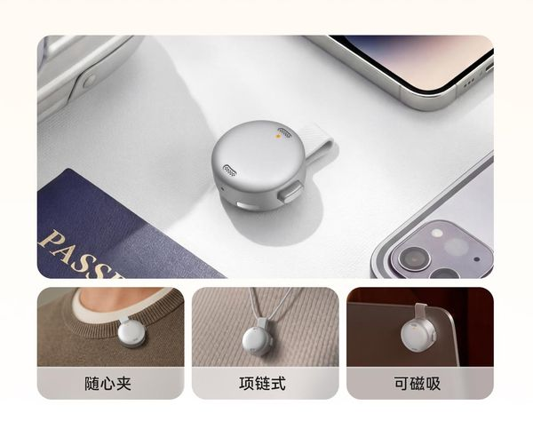
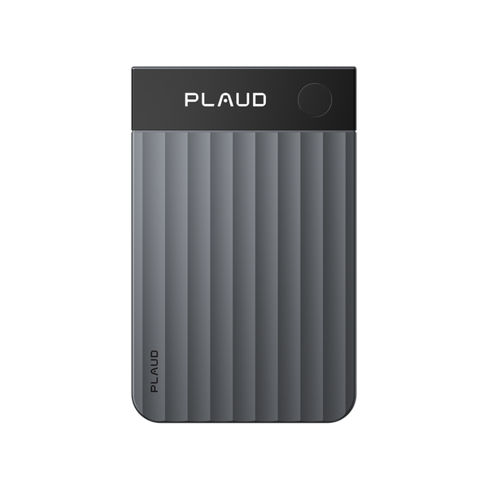
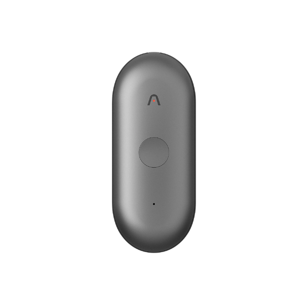
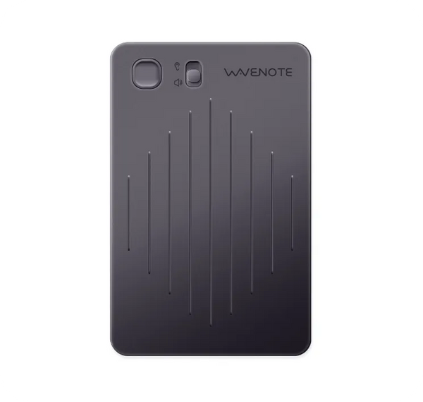
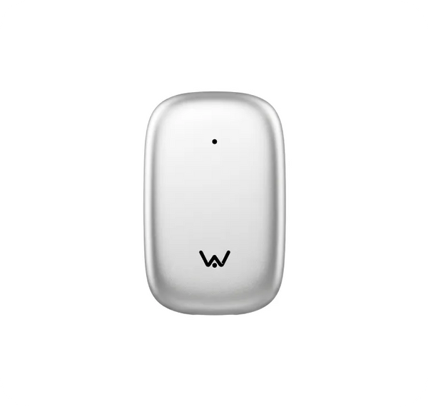
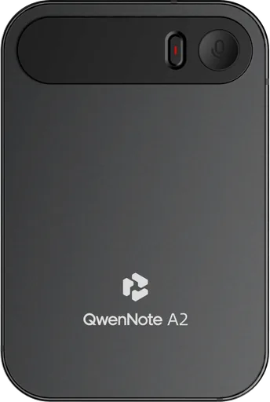

AI 录音设备怎么选？先看你每天用什么软件

文章目录
有时候，一场交流最让人手忙脚乱的，是对方刚说到关键处，你还在低头记上一句。等你抬起头，最想追问的那个细节已经过去了。
你上次开完会，第一份记录发到了哪里？如果团队平时就在飞书里看纪要，录音能直接同步进飞书妙记，会后就少了一道导出、转发的工序。一周开五场会，这点差别就很实在。
开会时，先把问题讨论透，会后再去核对谁负责、哪天交；做采访时，把记录交给设备，自己专心听对方讲，听到想深挖的细节就顺着追问下去。选对设备，那些值得认真听的话，当下能听进去，过后也找得回来。
最近，我在上海张江 AI 硬件商品店看到了四个品牌的六款产品。市面上的选择还有很多，之所以拿这六款举例，是因为它们表面上都能“帮你记”，真正用起来，却会把你带向完全不同的软件生态和工作方式。
还在挑机型，可以接着往下看「先对号入座：六款产品各适合谁？」；已有两三款候选，可以从「第一问：我平时用什么办公软件？」开始，按自己的日常需求逐项排除。
先对号入座：六款产品各适合谁？
1. 安克 × 飞书 AI 录音豆（D3200）
- 适合谁：团队天天用飞书，开完会就要共享纪要。
- 买前必看：约 10 克可夹戴，录音直入飞书妙记。单体续航 8 小时，配充电仓累计 32 小时。暂不支持鸿蒙系统。
2. Plaud Note Pro
- 适合谁：常用手机听筒打客户电话，且需要回听原话。
- 买前必看：带屏薄卡片，兼顾通话和现场。增强/续航模式标称 30/50 小时。戴耳机通话时录不到对方。
| ① 安克 × 飞书 AI 录音豆（D3200） | ② Plaud Note Pro |
|---|---|
 |  |
| 约 10 克可夹戴（飞书官网） | 约 30 克、2.99 毫米带屏薄卡片（Plaud 官网） |
3. Plaud NotePin S
- 适合谁：经常走动、访谈，想把设备夹在身上。
- 买前必看：可佩戴胶囊形态，连续录音 20 小时。主打现场谈话，与 Note Pro 共用 Plaud 软件。
4. WaveNote Note
- 适合谁：喜欢手机背贴卡片，想把访谈整理成汇报。
- 买前必看：国内配套 App 名为 WaveNoter，可生成报告和演示文稿。海外标称 42 小时，有明确的通话录音步骤。
| ③ Plaud NotePin S | ④ WaveNote Note |
|---|---|
 |  |
| 可佩戴胶囊（Plaud 官网） | 约 29 克、2.99 毫米薄卡片（WaveNote 官网） |
5. WaveNote Tag
- 适合谁：跑展会、听课时间长，希望随身佩戴。
- 买前必看：与 Note 共用软件，海外标称 42 小时。若电话录音是刚需，买前先让店员用本机实测。
6. QwenNote A2
- 适合谁：常用钉钉、千问办公，想到事就想开口交代。
- 买前必看：带屏、磁吸、独立 4G，连续听记 40 小时。硬件听记转写生成纪要后删除原音；据本次渠道确认，国行卡海外联网受限。
| ⑤ WaveNote Tag | ⑥ QwenNote A2 |
|---|---|
 |  |
| 多方式随身佩戴（WaveNote 官网） | 约 67 克、6 毫米带屏磁吸 4G（QwenNote 官网） |
注：以上续航均为官方标称。Plaud 和 WaveNote 的硬件参数引用海外官方资料，购买时请核对店内具体版本。
如果还在两三款之间犹豫，不妨顺着下面七个问题做一轮排除——先定软件生态，再过两道硬门槛（原声留存与录音场景），接着看携带手感与离线续航存储，最后比 AI 能力、月度成本与出国限制。
第一问：我平时用什么办公软件？
先从你每天都在用的软件里，圈出值得试的机型。录音硬件决定怎么把声音收进来，但决定你愿不愿意天天用的，是散会后文件落在哪儿。
- 天天用飞书，先看安克。录音自动同步进飞书妙记，同事按权限即可回听、搜索和协作。原本就在飞书里跟进的会议，少了一次导出文件再转发到群里的麻烦。需要注意，官方说明要求飞书客户端 7.6.0 及以上，且暂不支持鸿蒙系统。飞书官方产品介绍
- 常用钉钉或千问办公，先看 QwenNote A2。它支持通过钉钉、千问办公或独立的 QwenNote App 激活，三个入口以手机号打通、底层数据互通——个人平时在 QwenNote 里看听记，上班要在钉钉里建待办，两边都能兼顾。QwenNote A2 官方介绍
- 日常用 WorkBuddy 写方案，重点看 Plaud，也可以对比 A2。两家都已打通 WorkBuddy 生态：Plaud 国区 App 内置了双向联动入口，散会后看完纪要可以直接顺手发起写作；A2 的听记数据同样可以通过钉钉连接器或个人 MCP 授权给 WorkBuddy 读取。如果你习惯一散会就趁热出初稿，Plaud 的入口会更顺手些。Plaud × WorkBuddy · QwenNote 连接外部 AI 说明
- 习惯用独立工具沉淀资料，可以看 WaveNote。它在国内的配套软件叫 WaveNoter，提供手机 App 与网页端同步。如果你喜欢出门用手机收集采访、课程和灵感，回到电脑前再慢慢整理汇总，这种独立工作台就很合拍。WaveNoter 国内官网
第二问：我需要留下原始声音吗？
这一问是硬门槛。如果你的工作离不开核对原话——比如记者要核实引语，客户经理要确认对方说的是“周五交付”还是“周五前给答复”——再漂亮的 AI 摘要也代替不了回听原声。
- QwenNote A2 硬件发起的听记，在转写并生成纪要后，会物理删除各端的原始音频，只留下文字和纪要。这是为了打消敏感场合的音频泄露顾虑，但反过来也意味着：只要你的采访或取证必须保留原声，A2 就不适合作为唯一录音设备。A2 硬件常见问题
- 其余三家均支持保留原声。安克录音豆虽会在同步到飞书后自动清理机身本地文件，但云端仍可按权限在飞书妙记里回听；Plaud 与 WaveNote（WaveNoter）则允许在配套软件中回听或导出录音文件。需要长期留档的重要访谈，建议结束后实际导出一份音频并试播确认。安克使用说明 · Plaud 导出说明（海外版文档） · WaveNote 录音存储说明
第三问：我主要录现场，还是常打客户电话？
面对面谈话，六款都能胜任；但只要电话录音占大头，就得看对方的声音从哪里出来。
- 常贴耳用手机听筒打电话，且要留双方原声：优先看 Plaud Note Pro 和 WaveNote Note。这两款薄卡片都配备了振动/骨传导拾音方案，需要贴紧手机背面来收录听筒传出的声音。其中 Plaud Note Pro 支持自动切换通话与现场模式，WaveNote Note 则通过实体拨钮切到通话模式再录。共同的硬限制是：戴有线耳机或蓝牙耳机通话时，对方声音不经过手机听筒，这两款都录不到对方。Note Pro 通话说明 · WaveNote 分型号录音指南 · WaveNote 通话拾音说明
- 电话录音且只需要文字纪要：QwenNote A2 也可以贴背录。它内置骨传导传感器，磁吸在手机背面开启听记即可自动切换通话拾音，但原理相同，戴耳机通话同样不适用。A2 规格 · A2 通话听记说明
- 三款佩戴式设备，均更偏向现场谈话。安克录音豆与 Plaud NotePin S 主打气导拾音与随身佩戴，并不适合手机听筒通话录音。NotePin S 型号说明 至于 WaveNote Tag，商品页列了双模通话功能，分型号操作指南只写了怎样开始和结束录音。你平时如果戴耳机接客户电话，试机时就带上自己的手机和耳机，用 Tag 本机录一通电话，再回放听听双方的声音是否都清楚。
微信语音或电脑会议开外放时，六款设备都可以按现场谈话来录。手机贴耳打电话，可以看前面提到的背贴款。戴耳机开电脑会，用电脑端软件内录更省事。要是你常戴耳机打手机电话，还想事后回听双方的原话，优先试明确支持双向通话录音的耳机。
第四问：我会怎么带，一天录多久？
买之前不妨想象一个具体画面：明天出门，你会顺手把它放在哪儿？
- 手机常握在手里，偏爱背贴形态：可以在 Plaud Note Pro（约 30 克、2.99 毫米）、WaveNote Note（约 29 克、2.99 毫米）和 QwenNote A2（约 67 克、6 毫米）之间挑。前两款接近名片厚度，贴在壳上存在感很低；A2 内置了屏幕、4G 模块和更大电池，重量和厚度相当于前两款的两倍多。如果每天要长时间举着手机通话，最好在店里把它吸到自己手机上掂一会儿。
- 访谈或走动时需要解放双手：可以在 安克录音豆、Plaud NotePin S 和 WaveNote Tag 之间选。安克单体仅约 10 克、直径 23.2 毫米，极易隐蔽佩戴，休息时能放回充电仓补电；NotePin S 支持领夹、挂绳、腕带等多种佩戴方式，标称连续录音 20 小时；WaveNote Tag 的突出卖点是同样支持多方式佩戴，海外标称单次连续录音达到 42 小时。
看续航和存储时，有三处容易看漏的细节：
- 安克的 32 小时含充电仓补电，如果一场论坛要从早录到晚、中间不方便回仓，要按单体的 8 小时来算。安克规格说明
- Plaud Note Pro 的 30 小时和 50 小时对应不同的拾音距离：增强模式最长 30 小时，标称拾音最远约 5 米；续航模式最长 50 小时，标称拾音范围约 3 米。两人隔着咖啡桌对聊，和七八个人分坐长桌两端开会，该切哪个模式完全不同。Plaud 双模式说明
- 机身存储。Plaud 两款和 WaveNote 两款都是 64GB 本地存储；安克录音豆内置 8GB（据安克同型号 D3200 海外硬件规格，约可存 250 小时音频），离线录几天同样够用，同步后也会自动清理；真正有区别的是 QwenNote A2——它主打 4G 实时上云，机身只留了 128MB 断网暂存（另配 10GB 云端空间），一旦长时间无信号，没法像前面几款那样先离线攒着、等有网再传。安克 D3200 硬件规格 · A2 规格
第五问：我希望 AI 帮到哪一步？
假设一场客户会临近尾声，大家口头定下了这样一件事：
“小王负责方案初稿，周五下午三点前交。客户最关心的是实施周期和售后响应。”
散会后，不同人想要的结果其实不一样：有人要一份能共享的纪要，有人要一份能接着改的方案初稿，有人要把几次访谈攒成汇报材料，还有人只想要一条周五会弹出来的待办提醒。把你最想要的结果说具体，四套软件的分水岭就出来了。
以下均以中国大陆用户可核实的软件能力为准：
安克 × 飞书｜长于“让团队接着跟进”
个人使用层面，录音同步到飞书妙记后可直接看实时图文纪要、查原话或做知识问答。若团队协同跟进，还可以结合飞书多维表格与自动化工作流，让系统从纪要中自动提取“小王、方案初稿、周五下午三点”，写入任务表并由负责人核对派发、机器人推送进度。个人记录开箱即用，团队督办这一步需要前期配置。
Plaud Note Pro/NotePin S｜长于“从一段谈话接着写方案”
两款硬件共用同一套 Plaud 软件，硬件只决定怎么录。会后先用 Ask Plaud 提炼客户关注点，再在国区 App 内直接调用 Ask WorkBuddy，把需求顺手整理成方案初稿；反过来，也能在 WorkBuddy 中通过官方 MCP 授权读取 Plaud 的转写与总结，合并几次沟通做交叉分析。至于后续能否代发邮件或联动其他办公软件，取决于你给了 WorkBuddy 哪些权限。
Plaud 国区 App Plaud × WorkBuddy
注：海外版 Plaud v4.0+ 已提供自带连接器，可通过 Plaud Agent 直接操作 Google Calendar、邮件等工具；但在上海门店买国行版本，应以国区已上线功能为准。
WaveNote Note/Tag｜长于“把多份访谈整理成汇报”
比如同一个客户聊了三次，你想梳理哪些诉求反复出现、哪些是这周新增的，WaveNoter 支持对多份资料联合问答，并一键生成报告或演示文稿；换到上课、考证场景，还能把总结变成闪卡和测验题。但如果你想让它直接在公司 OA 或 IM 里给小王派任务，目前国内版尚无公开的第三方自动化对接路径，海外帮助中心也明确暂不提供第三方 API，更适合在配套软件内完成整理后再导出流转。
QwenNote A2｜长于“随口吩咐、直接派活”
走出会议室时，不用掏手机，长按机身圆形 AI 语音键就能先问“客户最关心哪两点”，接着说“帮我建一个周五下午三点前检查方案初稿的待办”，绑定账号后可直接在钉钉创建待办或日程；在设备设置中选定已开通的千问办公个人版或企业组织后，还能直接发起生成报告等任务，并设置完成后振动或语音提醒（部分指令仍在陆续开放，以账号实际可用为准）。
此外，A2 还留了两条进阶路径：一是通过个人 MCP 或钉钉连接器让 WorkBuddy、Cursor 等外部 AI 工具读取听记；二是用语音遥控自己电脑上的本地 AI Agent 执行任务——注意只有后一种电脑端方案目前限定 macOS 及特定固件（2.3.30+），日常用钉钉待办和千问办公不受此限。
第六问：每月转写额度够用吗？
买设备前，电量够不够和账号额度够不够得分别算。假设每周开五场一小时的会，按四周折算就是 1,200 分钟/月，拿这把尺子量一下四家的免费与付费门槛：
飞书 × 安克
基础额度 个人免费基础 300 分钟/月、2 篇纪要。
绑定赠送 首次绑定设备前 6 个月每月再赠 1,200 分钟、25 篇智能纪要，可叠加（前半年合计 1,500 分钟）。
有效期限 6 个月后恢复基础额度，设备解绑后赠送权益失效。
付费会员 个人高频使用可自行订阅飞书 AI 高级会员（国区 App Store 公开标价个人连续包月 ¥69/月、连续包年 ¥699/年；若公司已采购企业 AI 权益，则以组织配置为准）。
Plaud 国区
基础额度 标准会员含 300 分钟/月免费转写（约五场一小时会议）。
付费会员 高频使用需升级：国区 App Store 公开标价专业会员（1,200 分钟/月）¥33.8/月（¥339/年），卓越会员（不限时长）¥109/月（¥1,099/年）。
WaveNoter 国区
活动赠送 随店面/硬件活动附赠时长与会员，具体以门店标注为准。
付费选项 App Store 提供专业会员（¥58/月、¥518/年）、无限会员（¥99/月、¥999/年）及 120–6,000 分钟单独时长包（¥5.8–¥168）。
购买提醒 购买时一并核对赠期与到期续费价。
QwenNote A2
基础额度 标准会员基础 300 分钟/月。
绑定赠送 绑定 A2 前三年每月再赠 900 分钟转写、2GB 流量（前三年合计 1,200 分钟/月）。
使用限额 按前面的例子，四周开 20 场一小时的会，正好用满这 1,200 分钟。如果每场还想要一份图文纪要，每月免费的 5 篇只够其中四分之一。AI 问答每月限 30 次，AI 对讲和通话另有月限额。
付费会员 高级会员 ¥59/月（¥599/年），旗舰会员 ¥119/月（¥1,199/年）。
如果你还打算配合 WorkBuddy 或千问办公等工具做深度处理，也别忘了把对应账号本身的权益算进总预算。
第七问：我会带它出国吗？
跨国出差前，最值得确认的是三件不同的事：在当地能不能录？录完能不能同步？需要的在线 AI 功能能不能用？三者的答案往往不一致。
- 国行 QwenNote A2：据本次向销售渠道确认，其内置国内 4G 物联网卡在海外联网受限。官方公开规格也明确写明：A2 仅靠内置 4G 联网、不支持 Wi-Fi，且机身本地缓存仅 128MB（无信号时可暂存、恢复网络后上传）。如果你需要在国外当天拿到在线转写或调用千问办公，甚至只是想在海外连续离线录几天再回国同步，都不建议选国行 A2，也不能指望连手机热点救急。A2 规格 · A2 硬件常见问题
- Plaud 国区：国区 App 与网页端《用户协议》第十四条明确限定“本产品仅限于在中国大陆使用”，且国行硬件存在地区绑定规则（无法直接绑定海外版 App）。经常在境外办公的用户，买前务必确认目的地对应的硬件与账号版本。需要说明的是，协议划定的是软件服务范围，单凭这一条无法直接推断硬件出境后的离线录音表现。Plaud 国区用户协议第十四条 · 国行设备地区限制说明
- 安克飞书版与 WaveNote：目前尚未查到覆盖各国目的地、并承诺国行账号全功能可用的官方清单。向门店或客服确认时，不妨把问题问具体一点——“我买的是上海门店这个版本，用现在这个账号，在我要去的国家，能不能正常登录、上传当天录音，并在当地生成中文纪要、正常调用实时翻译和 AI 问答等在线功能？”这比只问一句“能不能带出国”，更有可能换回真正有用的答复。
总结下来，挑 AI 录音设备先把软件生态对上：飞书团队看安克，钉钉/千问想随口派活看 A2，用 WorkBuddy 写方案或常贴听筒录电话优先看 Plaud，偏爱独立整理多份访谈出汇报看 WaveNote；再按自己的硬需求做排除——必须留原声就避开 A2。常戴耳机打电话又要回听双方原话，优先试支持双向通话录音的耳机。高频使用或常出国，要提前核对会员续费和地区限制。把这几条对齐，该买哪台基本就不会踩坑。
延伸阅读
如果你已经把 QwenNote A2 放进了候选清单，推荐再读一篇专门介绍它的文章。作者把各项功能讲得很细，配套的操作视频尤其值得看，能帮你判断哪些功能是自己平时真会用到的。
资料核查截至 2026 年 11 月 23 日。本文依据各品牌官方产品页、帮助文档、国区 App Store 公开信息及文中注明的渠道答复整理。续航、存储、重量与拾音距离均为官方标称，未做六款同条件实测；产品图来自品牌官网或官方产品介绍。